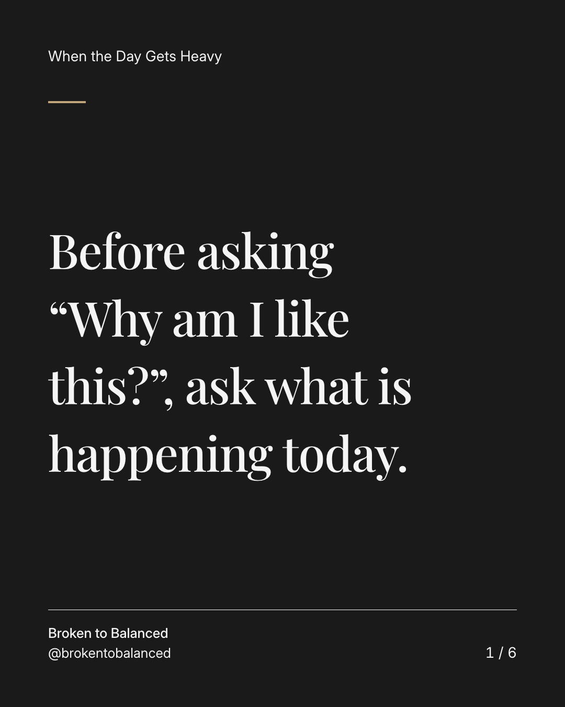
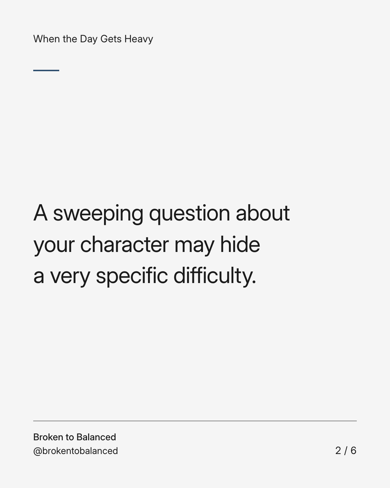
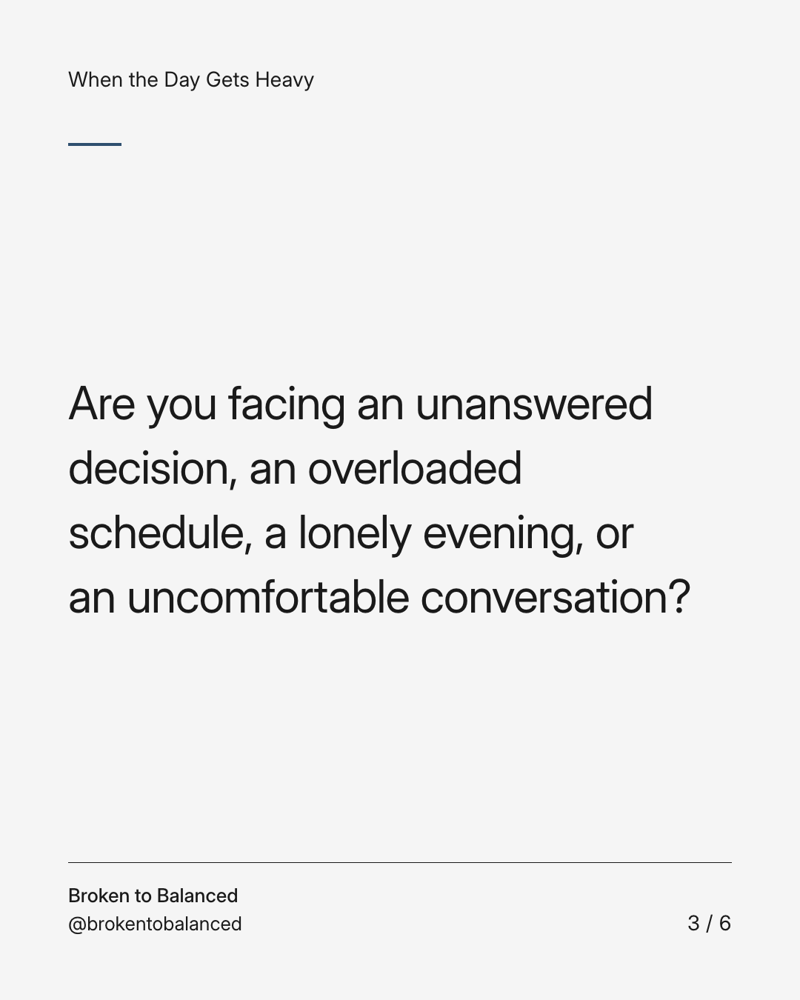
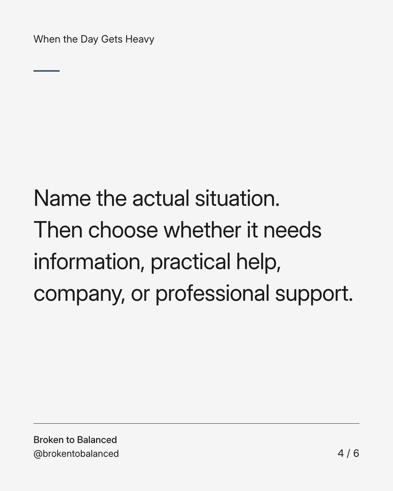
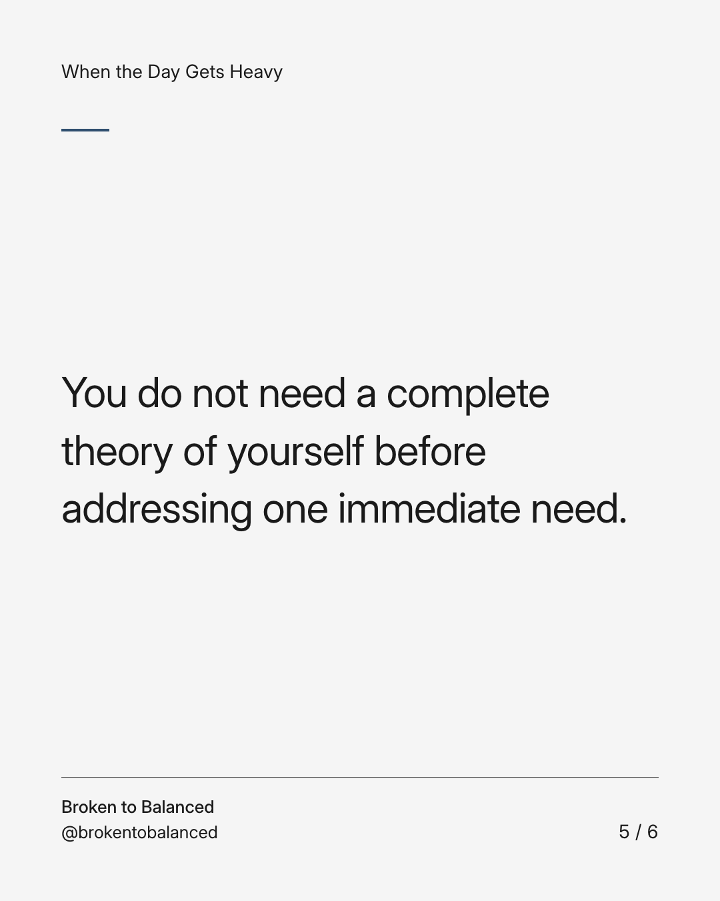
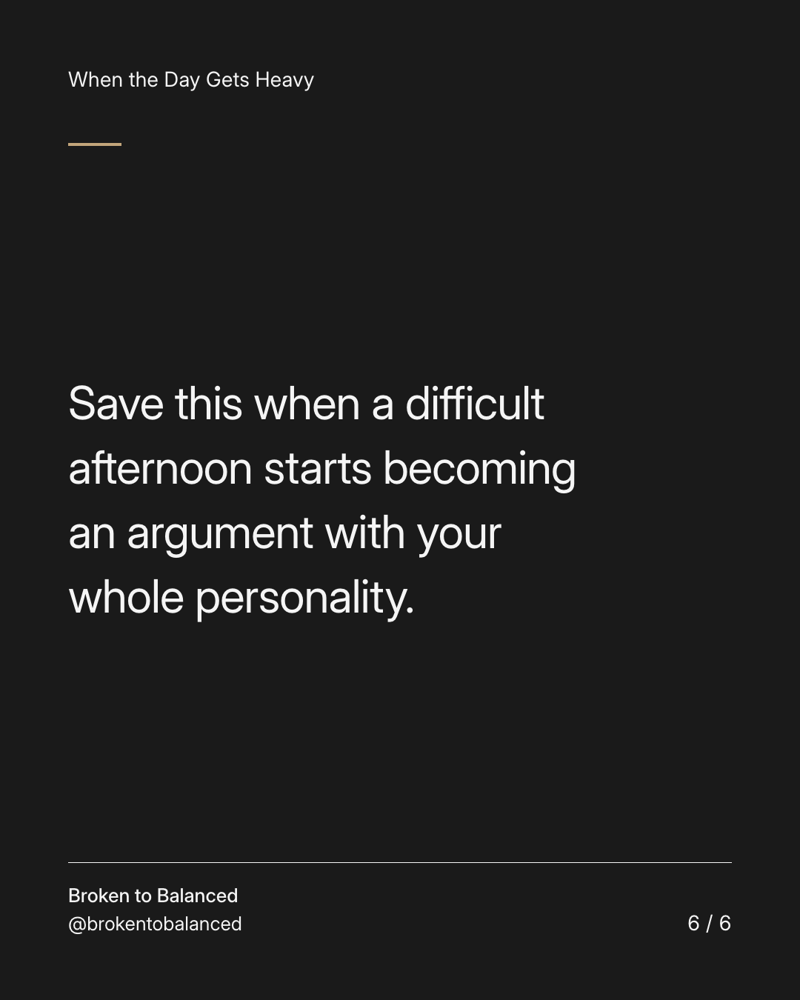

Exact text and accessibility text
Before asking “Why am I like this?”, ask what is happening today.
Slide 1 of 6. Before asking “Why am I like this?”, ask what is happening today.


Exact text and accessibility text
A sweeping question about your character may hide a very specific difficulty.
Slide 2 of 6. A sweeping question about your character may hide a very specific difficulty.


Exact text and accessibility text
Are you facing an unanswered decision, an overloaded schedule, a lonely evening, or an uncomfortable conversation?
Slide 3 of 6. Are you facing an unanswered decision, an overloaded schedule, a lonely evening, or an uncomfortable conversation?


Exact text and accessibility text
Name the actual situation. Then choose whether it needs information, practical help, company, or professional support.
Slide 4 of 6. Name the actual situation. Then choose whether it needs information, practical help, company, or professional support.


Exact text and accessibility text
You do not need a complete theory of yourself before addressing one immediate need.
Slide 5 of 6. You do not need a complete theory of yourself before addressing one immediate need.


Exact text and accessibility text
Save this when a difficult afternoon starts becoming an argument with your whole personality.
Slide 6 of 6. Save this when a difficult afternoon starts becoming an argument with your whole personality.
Exact caption
Plain-text fallback: select and copy the caption.